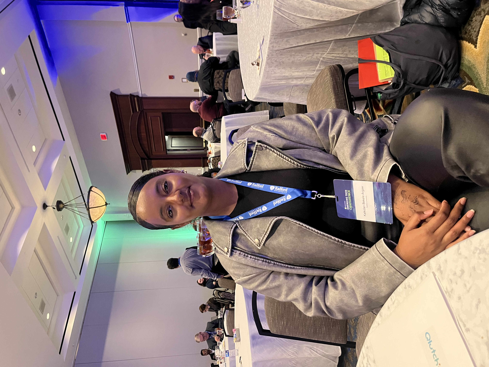

Data analytics
Customer Behavior Analytics
Cleaned customer shopping data with Python, queried it in PostgreSQL, and built a Power BI dashboard exploring revenue, categories, subscriptions, and customer demographics.
Explore project on GitHubI'm Kalkidan, a computer science senior focused on software engineering, databases, and applied AI. I enjoy turning complex problems into practical tools and clear insights.
● Open to new-graduate software engineering, data engineering, analytics, and AI opportunities · May 2027

I'm pursuing a B.S. in Computer Science at Radford University, with concentrations in Software Engineering and Databases. My experience spans backend development, data analytics, machine learning, and hands-on IT support. I like work where engineering and thoughtful problem-solving come together, especially when the result makes something easier or more useful for people.
Dashboards, architecture, app interfaces, and evaluation results from my projects. Select any preview to see it in detail.
Cleaned customer shopping data with Python, queried it in PostgreSQL, and built a Power BI dashboard exploring revenue, categories, subscriptions, and customer demographics.
Explore project on GitHubOrganized CRM and ERP data into Bronze, Silver, and Gold layers in SQL Server, with cleansing procedures, fact and dimension views, and data quality checks.
Explore project on GitHubExplored an imbalanced transaction dataset, used downsampling, and trained a logistic regression classifier. Documented the workflow and evaluation results in a reproducible notebook.
Explore project on GitHubBuilt a Python pet care planner with a Streamlit interface, priority-based scheduling, task filtering, recurring tasks, and conflict detection. Includes automated tests.
Explore project on GitHubImplemented a content-based scoring system that ranks songs by genre, mood, energy, and valence. Documented how the weights affect recommendations and where the small dataset limits discovery.
Explore project on GitHubCombined Python exploratory analysis, MySQL queries, and Power BI reporting to investigate lending, deposits, customer segments, and banking risk indicators.
Explore project on GitHubDebugged an AI-generated guessing game, corrected hint direction and input handling, separated logic from the interface, and checked behavior with pytest.
Explore project on GitHubMy role: cleaning and validation in PySpark and Databricks. I trimmed text, handled blank values, removed exact duplicates, and preserved validation failure reasons for rejected records.
500 duplicates removed · 25 validation tests passed. Metrics summarize my team-project contribution.
As lead database administrator, I contribute to profile data storage, API integration, and testing with my teammates.
Architecture overview of the profile workflow—not an application screenshot. My work includes testing create, retrieve, and update operations and troubleshooting integration.
Collaborated on supervised machine learning, feature engineering, data analysis, and model evaluation using Python and scikit-learn.
Worked with Python and SQL on predictive analytics, data pipelines, customer trends, and Power BI reporting.
Supported server-side development and database functionality while collaborating with frontend teammates.
Helped users troubleshoot systems, devices, printers, and software, supporting dependable day-to-day technology operations.
Evaluated AI responses for accuracy, consistency, and alignment with user intent.
Python · Java · SQL · C · Rust
MySQL · PostgreSQL · SQL Server · pandas · Power BI · Excel · PySpark · Databricks
scikit-learn · Git · AWS Lambda · DynamoDB · API Gateway · Oracle Cloud Infrastructure